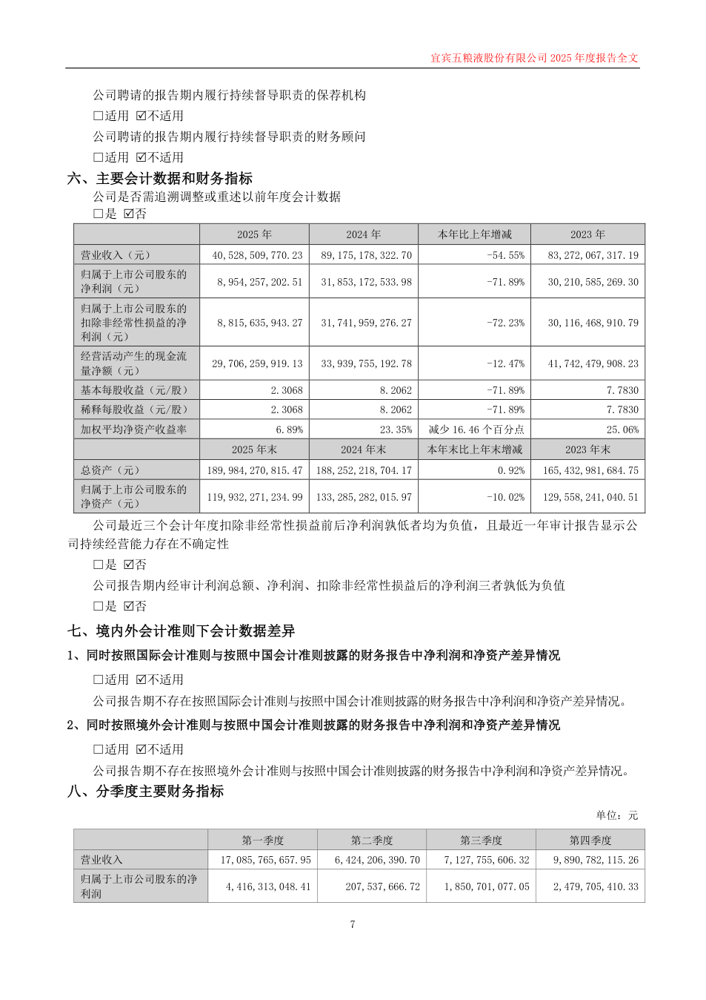
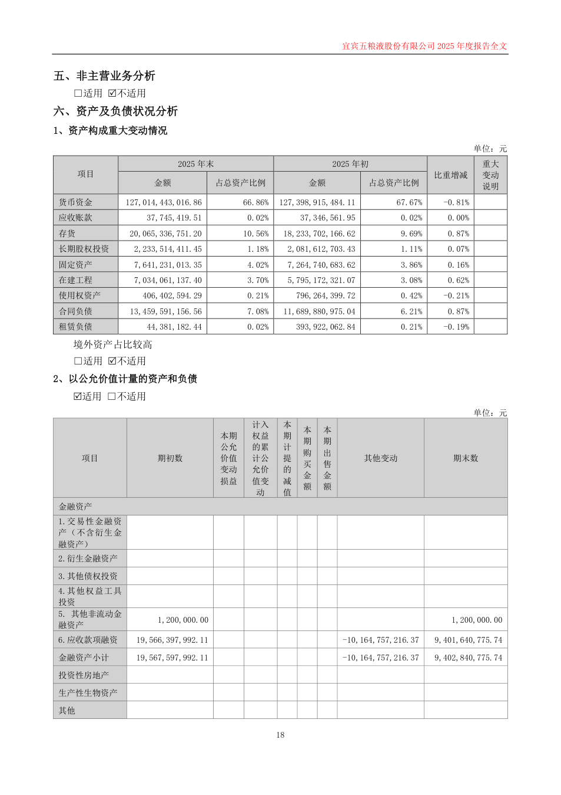
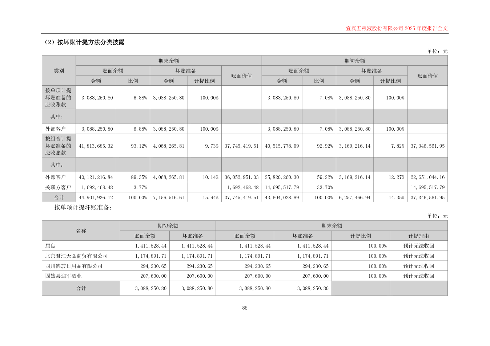

历史运行RUN-V7-DCF895BC5377 · 历史代码e29c175 · 2025/2024 · 本轮未新建模型任务
收入40,528,509,770.23 / 89,175,178,322.70元；应收净额37,745,419.51 / 37,346,561.95元。差55.62个百分点，净额增加398,857.56元。



challenge：程序筛查显示应收账款增速1.07%、营业收入增速-54.55%，增速差55.62个百分点，应收账款绝对变动398,857.56元，需核查收入与应收变动方向背离的原因。 正常解释：待验证假设：公司以经销为主、采用“先款后货”结算，或可解释应收与收入变动不同步，尚需合同与回款证据验证。；待验证假设：应收账款按组合计提坏账准备并存在单项计提，其结构变化可能影响应收余额，需账龄与减值资料验证。
counter：程序事实可复核：应收账款增速1.07%、营业收入增速-54.55%、增速差55.62个百分点，应收绝对变动398,857.56元，但应收仅净额口径、未评价重要性。 正常解释：待验证假设：年报载明以经销为主、“先款后货”结算，或可解释应收与收入变动不同步，需合同与回款证据验证。；待验证假设：应收账款按组合计提坏账准备并存在单项计提，结构变化或影响应收余额，需账龄与减值资料验证。
review：程序筛查事实：应收账款增速1.07%、营业收入增速-54.55%，增速差55.62个百分点，应收绝对变动398,857.56元；未评价金额重要性。 正常解释：待验证假设：年报载明以经销为主、“先款后货”结算，或可解释应收与收入变动不同步，需合同与回款证据验证。；待验证假设：应收账款按组合计提坏账准备并存在单项计提，结构变化或影响应收余额，需账龄与减值资料验证。
# 五粮液待核查任务卡 历史运行RUN-V7-DCF895BC5377；期间2025/2024；代码e29c175；本卡为2026-10-11 AI执行代理依据原文和既有AP程序映射补充编辑，**不是历史模型原始输出**。项目组采用状态：待专业确认。可查看原始运行主张对照同源备用.html。 待核查问题：收入下降而应收净额小幅增加，差异是否与2025业务收入确认核算调整、客户结算及回款有关？四金额和同比计算已核对，不足以认定错报或坏账。 认定与理由：收入发生、截止、准确性涉及交易实质和确认时点；应收存在、计价和分摊涉及客户余额与坏账准备。复用backend/audit_procedure_map.json的AP-01初步分析、AP-03风险评估辅助、AP-06补充证据再评估。以下为可供项目组决定是否采用的具体动作，尚未执行。 |建议索取资料|对象及动作|用于核对的问题| |---|---|---| |2025收入确认调整明细及凭证清单|将原确认金额、调整金额与更正后金额逐项勾稽至分季度收入及年度总额，查阅所涉合同是否约定控制权转移、返利、退货或结算变化|核算调整如何影响年度收入，避免把增长率差直接归因于回款恶化| |2024及2025年末应收客户明细、账龄表、坏账准备明细|将客户余额合计与附注账面余额43,604,028.89/44,901,936.12元勾稽，将坏账准备与净额核对|判断净额小幅增加是否掩盖客户结构或计提变化| |期后回款流水及对应收款核销记录|对项目组选定客户逐笔将银行到账日期、金额、付款方与应收核销明细、合同结算日期勾稽；区分期末前后收入与收款|检查期末应收的存在、期后收回及截止，不把现金流总额当成单笔回款证明| |主要客户合同及信用政策变更说明|检查预收、交付验收、账期、返利退货、信用额度等条款，并比较2024/2025的版本与审批记录|制度披露是否适用于本期交易，正常解释有没有个案支持| 已有证据支持范围：年报第7页支持收入金额；18/51页支持合并应收列示额；88页支持余额、准备、净额关系；8页和同日更正公告支持“存在收入核算调整披露”。它们不支持已经收回全部欠款、合同条款已核实或差异全部合理。 不能作出的判断：识别错报金额、重大风险、舞弊、回款恶化、无需继续核查。计划重要性尚未设置。抽样对象、范围、所需期间和最终专业采用由项目组决定。本卡未假设已经取得内部明细。
AI生成内容，仅供审计计划阶段进一步核查，不构成审计结论或审计意见。